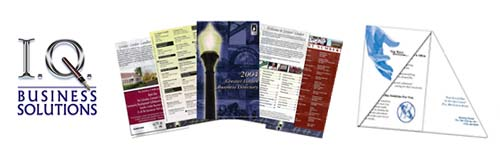
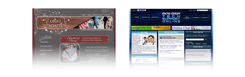

design.
graphic design
Creative services for graphic design are available for a variety of applications. Whether your project is small or large, I can provide the right design to advertise your business or personal style. Services include photo editing, corporate identity, catalog layout, brochures, posters, magazines, PowerPoint presentations, and postal mail ads. I support applications:
Adobe Photoshop,
Illustrator,
InDesign, and
Microsoft Office.

web design
Translating your business to the web can be challenging, but with the right plan, I can help you make your online business successful. My services cover basic
website setup such as hosting and domain selection to
front-end user interface design. I support applications:
Dreamweaver and
Microsoft Expressions in addition to content management systems:
DotNetNuke,
Joomla and
WordPress.
